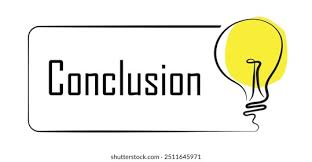

Conclusión detallada de las apps

1) NotebookLM (Google)Resumen:
NotebookLM es la propuesta de Google para un asistente de investigación centrado en documentos: carga textos, PDFs o notas y el sistema los resuelve/condensa, genera guías de estudio, resúmenes y ahora incluso “Video Overviews” (diapositivas narradas). Es especialmente fuerte en procesamiento de grandes volúmenes de texto y en mantener contexto a lo largo de una investigación. Google NotebookLM+1
Puntos fuertes:
Excelente para trabajo académico y síntesis de fuentes.
Herramientas integradas para crear salidas estructuradas (resúmenes, guías, mind maps).
Fuertes actualizaciones recientes en contexto y formatos (mejor manejo de documentos largos).
Limitaciones
Dependencia de la calidad de las fuentes que cargues (si subes textos incoherentes, produce salidas con ruido).
Consideraciones de privacidad/propiedad intelectual cuando trabajas con documentos sensibles (si bien es Google, conviene revisar políticas).
Ideal para: estudiantes, investigadoras/es, profesionales que trabajan con muchos documentos y buscan un asistente que “entienda” colecciones largas.

2) Suno / SunoAI:
Resumen: Suno se posiciona como un generador de música por IA: permite crear canciones completas a partir de prompts, ofrece opciones de personalización y promociona que las piezas generadas pueden usarse comercialmente (el sitio enfatiza música “copyright-free” generada por IA). Es una de las soluciones más accesibles para generar música rápida. Suno
Puntos fuertes:
Rápido para prototipar ideas musicales (melodía, ritmo, voces sintetizadas).
Interfaz pensada para no especialistas; plantillas y controles sencillos.
Modelos optimizados para producción comercial (según su web).
Limitaciones
Calidad variable según el género y la complejidad: lo mejor es como punto de partida o demo.
Posibles ambigüedades legales en la práctica sobre derechos si mezclas muestras externas — siempre revisa los términos y licencias antes de uso comercial.
Ideal para: creadores de contenido, desarrolladores de prototipos musicales, productores que necesiten ideas rápidas.
3) Tome AI:
Resumen: Tome es una herramienta de “storytelling” y creación de presentaciones asistida por IA: genera narrativas visuales y presentaciones completas a partir de prompts, con plantillas y generación automática de imágenes/diapositivas. Se enfoca en rapidez y diseño automático. Tome
Puntos fuertes:
Muy buena para convertir ideas en presentaciones visualmente consistentes al instante.
Integraciones para imágenes generadas y estructura automática de diapositivas.
Facilita storytelling y pitches rápidos.
Limitaciones
Generaciones muy automatizadas que pueden necesitar edición humana para coherencia fina o branding.
No reemplaza a un diseñador cuando se busca un estilo corporativo muy específico.
Ideal para: emprendedores, docentes, equipos de producto que necesitan “pitch decks” o presentaciones rápidas.
4) Pixverse:
Resumen: PixVerse es un generador de video por IA (text-to-video y foto-a-video), con foco en resultados estilizados (incluye capacidades orientadas a anime/animación) y modelos iterativos para mejorar fluidez y detalle. Es de las opciones que prometen pasar de imagen a secuencia animada de forma sencilla. app.pixverse.ai+1
Puntos fuertes:
Convierte imágenes o prompts en vídeos cortos con movimiento y efectos.
Opciones específicas para estilos (ej. anime), y modelos grandes optimizados para fluidez.
Rápido prototipado de escenas sin necesidad de saber animación tradicional.
Limitaciones
Artefactos y “puertas” en movimientos complejos; la calidad puede bajar en close-ups o física realista.
Consumo de recursos y posibles restricciones de uso comercial según modelo/plan.
Ideal para: creadores de contenido visual, marketers, y quienes necesitan vídeos cortos estilizados sin contratar estudio de animación.
5) ColoringBook.AI:
Resumen: Herramienta sencilla para convertir fotos o textos en páginas para colorear; permite crear libros de colorear completos (PDF/PNG), mantener consistencia de personajes y generar versiones imprimibles. Muy orientada al uso infantil y manualidades. coloringbook.ai
Puntos fuertes:
Muy accesible y simple: convierte fotos familiares en páginas de colorear.
Permite crear libros con varias páginas y descargar en formato imprimible.
Buena para actividades educativas y regalos personalizados.
Limitaciones
Resultado estilístico muy específico (líneas limpias, sin sombreado complejo) — no sirve si quieres arte de color detallado.
Riesgos de uso de imágenes con derechos (si subes material con copyright, ojo con licencias).
Ideal para: profesores, padres, emprendedores de impresos infantiles o actividades creativas para niños.
6) Animated Drawings:
Resumen: Nombre usado por varios proyectos/apps, pero la idea general es convertir dibujos estáticos (garabatos, personajes) en animaciones simples. Hay implementaciones de investigación (p. ej. Meta/FAIR y demos educativas) y apps móviles ligeras que permiten animar personajes dibujados. Sketch Metademolab+1
Puntos fuertes:
Transformación divertida y educativa: ideal para enseñar principios básicos de animación.
Muchas implementaciones open-source y demos que permiten experimentar sin costo.
Buenas para llevar dibujos infantiles a movimiento simple.
Limitaciones
Animaciones básicas: no reemplazan pipeline de animación profesional.
Calidad depende de la claridad del dibujo (personajes con proporciones desconocidas pueden producir artefactos).
Ideal para: docentes, familias, artistas principiantes y proyectos educativos.
7) Perplexity:
Resumen: Perplexity es un “answer engine” potenciado por IA que da respuestas tipo buscador pero enriquecidas (cita fuentes, busca en la web y devuelve resúmenes). Se vende como una alternativa que combina LLMs con recuperación de información en tiempo real. Perplexity AI
Puntos fuertes:
Respuestas rápidas con referencias y contexto extraído de la web.
Buen para consultas factuales y para obtener respuestas con fuentes citadas.
Interfaz limpia y orientada a la consulta directa (menos “charla”, más respuesta accionable).
Limitaciones
Como cualquier motor que usa la web: sensibilidad a noticias falsas o fuentes poco fiables; conviene chequear las referencias.
No sustituye a herramientas especializadas para trabajo en profundidad (p. ej. revisión académica completa).
Ideal para: búsquedas rápidas, verificación preliminar de hechos y profesionales que necesitan referencias inmediatas.
Recomendaciones prácticas y advertencias
- Privacidad / licencias: para todas las herramientas que procesan tus archivos (NotebookLM, PixVerse, ColoringBook.AI, etc.) revisa la política de datos y licencias — especialmente si tus archivos son sensibles o si vas a usar salidas comercialmente.
- Edición humana necesaria: ninguna IA todavía reemplaza la revisión humana completa; úsalas como aceleradores (borradores, prototipos, ideas).
- Calidad vs. velocidad: las apps que prometen “resultados instantáneos” sacrifican a menudo el detalle; para productos finales invierte tiempo en pulir manualmente.
- Prueba gratuita: muchas tienen planes freemium — prueba antes de pagar para ver si el estilo/resultado se ajusta a lo que buscas.